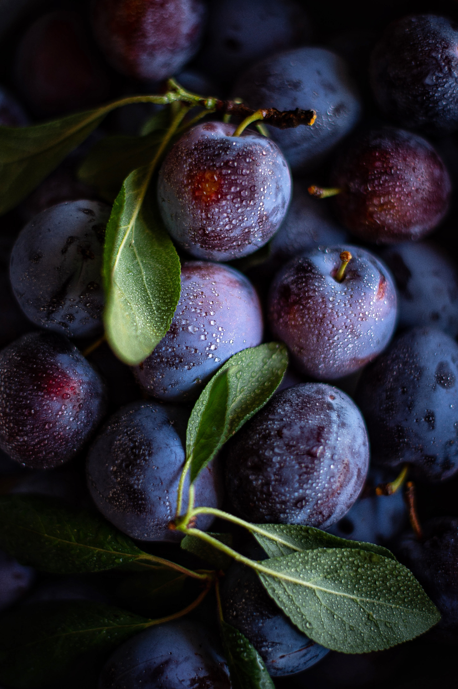

hello, this is a demo made by abhishek chaudhary . i am using the media query property of css here. this website changes the background color depending on the different screen sixes. it has a total of 4 color options.
also, this website uses the float property of thext. the text here will float around the image.